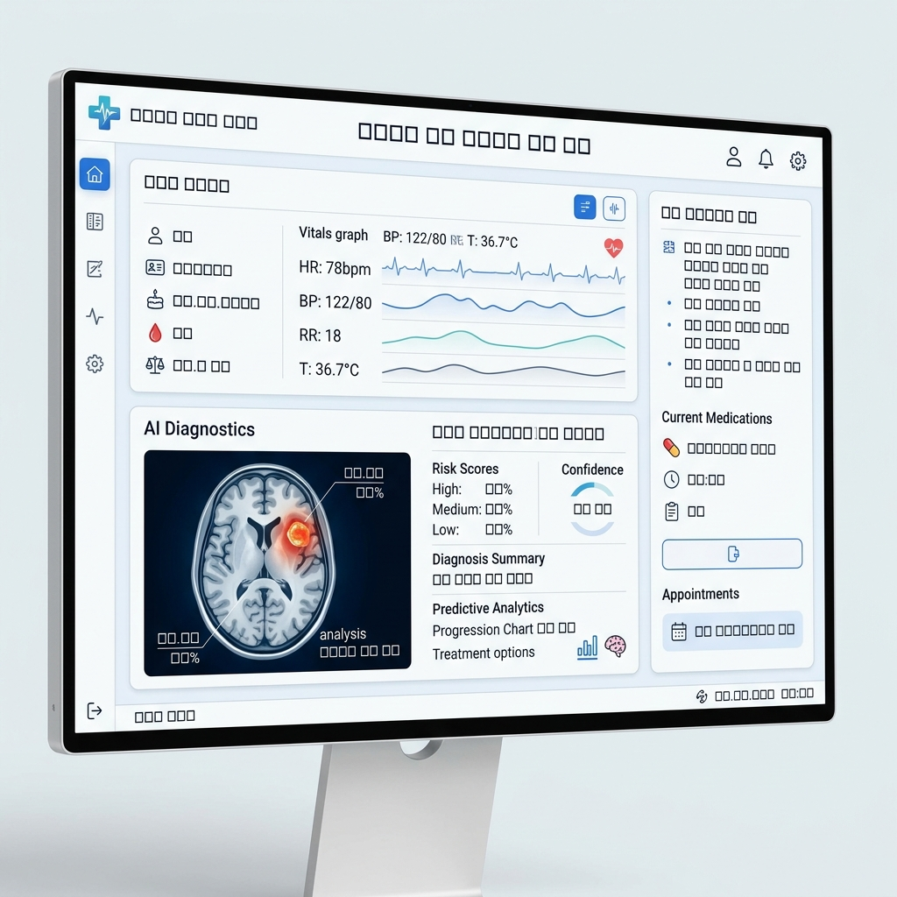

紙と分断されたシステムに奪われる「医師の1時間」を取り戻す。 問診からAI診断予測、会計プロセスまでを単一のUIに統合した、 次世代のクラウドネイティブ医療基盤。

電子カルテ（EHR）、PACS（医用画像管理）、検体検査システム、そして医療事会計。すべてが分断されたベンダーによって構築されているため、医師は1人の患者の「全体像」を把握するために、1日平均500回以上の無駄なクリックを強いられています。
これは単なる「不便」ではありません。診療時間の圧迫による、重大な見落としリスクの温床です。
診察ではなく「データ入力と探索」に費やされる膨大な時間。
レガシーなシステムによるUIの不備が、医療従事者のストレスの最大の要因に。
分断を取り払い、臨床推論をアシストする。これこそが次世代のERPです。
レガシーな電子カルテと部門システム（PACS・RIS・LIS等）をネイティブAPIで統合。1つのタイムライン上で、血液検査の推移、CT画像、過去の紹介状がシームレスに俯瞰できます。情報を探す時間はゼロになります。
カルテのキーボード入力は過去のものに。医療用語・医薬品名を精緻に学習したAI音声入力により、患者の目を見たまま対話するだけでSOAP形式のカルテが自動で書き起こされます。
電子カルテに入力される症状ベクトルと過去の何百万もの症例データをリアルタイムに照合。見落としがちな微細な検査数値の変動から、重大な隠れ疾患のリスクを「予測的アラート」としてダッシュボードに掲出します。
医師のカルテ記載内容から、算定可能な診療報酬項目（レセプト）をAIが自動抽出し、医事課へ提案。返戻リスクを最小化しながら、病院経営のキャッシュフローと病床稼働率をリアルタイムモニタリングします。
患者の「命」と「究極のプライバシー」を預かるシステムとして、いかなる妥協も許しません。最新のゼロトラスト・アーキテクチャで構築されています。
はい、可能です。当社のデータエンジニアリングチームが、既存ベンダー（富士通、PHC等）の独自DBから標準的なSS-MIX2形式等へマッピングし、過去の紙カルテのスキャンデータも含めて安全にマイグレーションを実行します。
MEDICOREはハイブリッドクラウド構成を採用しています。院内へのエッジサーバー設置により、ローカル環境でもオフラインで最低限のカルテ参照・入力が可能です。ネットワーク復旧時に自動でクラウドと同期されます。
もちろん可能です。総合病院向けのフルスイート版だけでなく、無床クリニック特化型の軽量版（MEDICORE Lite）を提供しています。料金もサブスクリプションで最適化されています。
実際のデモ画面を操作しながら、圧倒的なレスポンス速度とAIのインサイトをご体感ください。専任の医療DXコンサルタントが無料でご案内します。